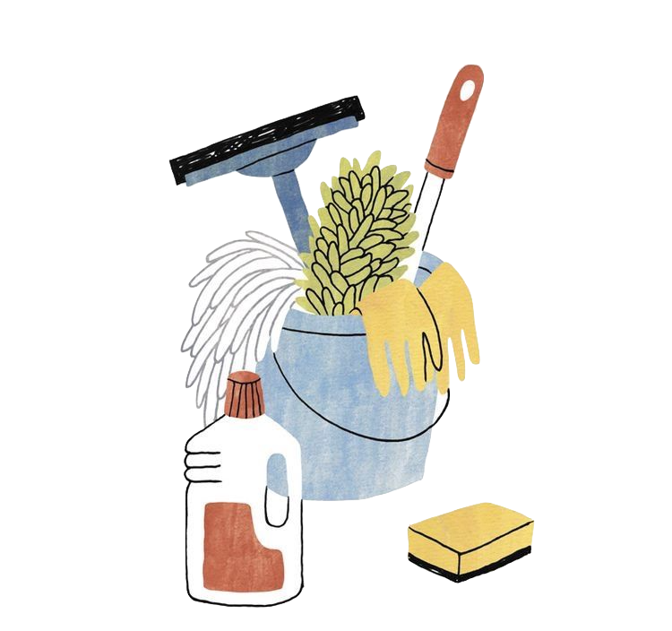

Household Assistance
From laundry to light cleaning, we help moms take a breather by lending a hand with daily chores.
 Mom Haven
Mom Haven
Your kindness can rewrite the narrative of struggle into one of courage, love, and support.

We believe that small acts of kindness can create big changes. That’s why we offer a variety of services designed to ease the load for hardworking moms. Whether it’s lending a hand with household tasks, preparing a warm meal, or simply providing heartfelt support, we’re here to make a difference. Explore how you can be part of this journey to pamper moms and brighten their days!
From laundry to light cleaning, we help moms take a breather by lending a hand with daily chores.
Wholesome, warm meals prepared with care to fuel hardworking moms and their families.
A trusted extra set of hands to care for kids, giving moms the chance to relax or focus.

Send carousel craft kits, story-time surprises, and memory-making keepsakes.
“Helping a mom who was overwhelmed with her household tasks was such a humbling and fulfilling experience. Knowing that my small actions could ease someone’s burden and put a smile on her face made me feel like I truly made a difference.”— Malia, Mom Haven volunteer Become a Volunteer
Moms are everyday heroes, always putting others before themselves. They juggle countless responsibilities and rarely ask for the support they deserve. This is where you come in. By making a donation, you’ll help us provide vital services—things like childcare, meal deliveries, and moments of self-care—for moms who need a little help. Every dollar adds up to create meaningful change in their lives.
Help a Mom — Donate Now